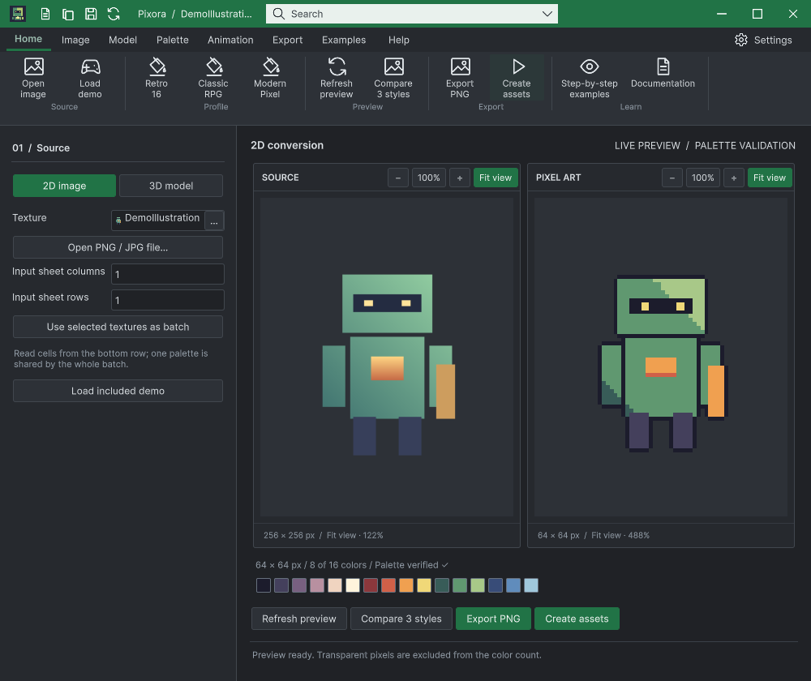

Tracefolio REPORTS & ISSUES
Tracefolio REPORTS & ISSUES하단 창 목록을 누르는 동안 다른 제품 창이 Unity 뒤로 내려가는 문제 수정
해결실제 140ms 누름으로 수정 전 재현하고, 누름 중 앞 창 그룹을 보존해 수정했습니다.
작업 결과
36회 하단 목록 교차 선택과 16회 본문 교차 클릭, 2개 반대 조건 검사가 통과했습니다.
변경 내용
재현 조건
Windows, Unity 6000.0.83f1, Templete 1.2.0, Pixora와 DataTable 실제 네이티브 창
재현 순서
두 제품 창을 Unity 본체 앞에 둡니다. 하단 목록의 DataTable 또는 Pixora 항목을 140ms 누른 뒤 뗍니다. 네이티브 Z 순서를 전후 비교합니다.
기대 동작
선택한 창이 앞으로 오고, 기존에 앞에 있던 다른 제품 창도 Unity 앞에 남습니다.
실제 동작
수정 전 Pixora→DataTable→Unity에서 DataTable→Unity→Pixora 순서로 바뀌었습니다. 수정 후 두 제품 모두 Unity 앞에 남습니다.
원인
MouseDown에서 Unity 본체가 먼저 활성화되고 MouseUp에서 선택 창이 활성화됩니다. 그 사이 기존 tracker가 managed focusedWindow 기준으로 앞 창 기록을 지웠습니다. down/up을 같은 입력 묶음으로 보내던 이전 검증은 이 중간 구간을 놓쳤습니다.
적용 내용
네이티브 foreground·Z 순서로 앞 창 그룹을 추적합니다. 왼쪽 누름 중 그룹을 지우지 않으며, 하단 목록·공통 창 목록은 선택 전 그룹을 보관해 활성화 뒤에 배치합니다. 최소화된 창·이미 뒤에 있던 창을 복원하지 않고 포커스를 빼앗지 않습니다. 기존 공개 생성자/API는 유지했습니다.
검증
동일 140ms 수정 전 실패/수정 후 성공 대조. 60·140·350ms 각 누름 조건의 36회 선택 모두 두 창 앞 유지 및 선택 창 foreground 확인. 본문 16회 통과. Unity 본체를 직접 선택하면 두 창이 뒤에 남고, 다음 목록 선택에서도 이미 뒤에 있던 동료를 임의로 올리지 않는 2개 조건 통과. 실제 최대화→복원, 최소화→공통 목록 복원 클릭도 성공.

남은 사항
Windows / Unity 6000.0.83f1에서 검증했습니다. 다른 OS·배율·물리 모니터 연결 변경은 미확인입니다. DataTable 전체 가이드 검사 238건의 과거 화면/소스 불일치는 남아 있으며 통과로 변경하지 않았습니다. 이번에 다시 캡처한 26개 기록은 현재 소스와 일치합니다. Pixora Undo/Redo 기능을 새로 추가한 것은 아닙니다.
작업 시간
- 제안 시간: 40~80분
- 실제로 완료된 시간: 시작 2026-10-30 17:16:52 KST · 구현·실행 검증 및 프로젝트 푸시 완료. 보고 작성 시점 2026-10-30 18:37:25 KST, 경과 80.6분. 보고서 공개 배포 확인은 별도 단계입니다.
- XERJ: 사용 — Tools/Search/Xerj.ps1 Status 및 Search PreserveVisiblePeer 호출. 후보를 현재 WindowFocus/WindowFrame/WorkbookNativeWindow 소스와 네이티브 실행 기록으로 확인했습니다.